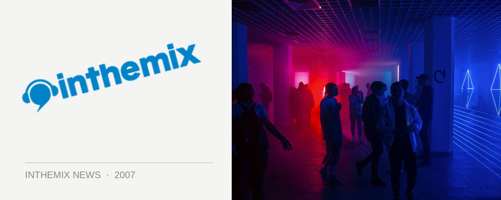

Marshall Jefferson Australian tour
The ‘Godfather of House’ is coming back to our shores for the first time in eight years, including a gig with the SHE crew across two states.
Marshall Jefferson earnt himself the ‘godfather’ moniker for a reason. In 1986 he played piano on a house record for the first time ever on Move Your Body (House Music Anthem), and is also attributed to shaping the timeless acid house sound with tunes like Dream Girl and Acid Tracks and he remains a mainstay of the Chicago house scene.
See for yourself when Marshall Jefferson plays the following dates…
Fri 29th June: SHE @ Alhambra Brisbane
Sat 30th June: SHE @ Industrie Sydney
Sat 7th June: Yum Yum Melbourne
Sub 8th June: Electric Circus, Adelaide